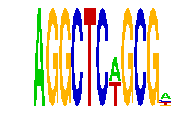

family_2 |
|---|
|  |
| Download PWM |
| Download instances (motifs) |
| Show motif distribution |
Query_ID | Query_Consensus | Subject_Name | Source_DB | Subject_ID | Length | Orientation | Offset | Divergence | Overlap | Subject_Consensus |
|---|---|---|---|---|---|---|---|---|---|---|
| family_2 | AGGCTCWGCGN | WWTAAGGC | JASPAR | PF0127 | 8 | as given | -4 | 0.064 | 4 | TTTAAGGC |
Sequence | Start_position (from start) | Start_position (from end) | Average conservation | Best conservation score | Instance_with_best_CS | Best_Z-score | Instance_with_best_ZS | Strand |
|---|---|---|---|---|---|---|---|---|
| chr8:75095622-75096622 | 396 | 407 | 0.995727 | 1 | AGGCTCWGCG. | 17.349785 | AGGCTCWGCG. | -1 |
| chr12:104593596-104594596 | 303 | 314 | 0.992636 | 1 | AGGCTCWGCG. | 17.349785 | AGGCTCWGCG. | 1 |
| chr5:151097640-151098640 | 138 | 149 | 0.377364 | 0.528 | AGGCTCWGCGW | 17.349785 | AGGCTCWGCG. | 1 |
| chr2:59790257-59791257 | 396 | 407 | 0.000727273 | 0.003 | AGGCTCWGCGW | 17.349785 | AGGCTCWGCG. | 1 |
| chr3:159445053-159446053 | 143 | 154 | 0.0136364 | 0.03 | AGGCTCWGCGW | 17.349785 | AGGCTCWGCG. | 1 |
| chr5:20835785-20836785 | 964 | 975 | 0.000909091 | 0.003 | AGGCTCWGCG. | 16.767872 | AGGCTCWGCGW | 1 |
| chr16:72808279-72809279 | 691 | 702 | 0.121182 | 0.402 | AGGCTCWGCG. | 16.767872 | AGGCTCWGCGW | 1 |
| chr1:193219473-193220473 | 477 | 488 | 0.019 | 0.111 | AGGCTCWGCG. | 16.767872 | AGGCTCWGCGW | 1 |
| chr1:24113949-24114949 | 904 | 915 | 0.946455 | 1 | AGGCTCWGCGW | 17.349785 | AGGCTCWGCG. | 1 |
| chr19:53179744-53180744 | 604 | 615 | 0.159545 | 0.198 | AGGCTCWGCGW | 17.349785 | AGGCTCWGCG. | 1 |
| chr10:53056609-53057609 | 498 | 509 | 0.00736364 | 0.033 | AGGCTCWGCG. | 16.767872 | AGGCTCWGCGW | 1 |
| chr1:180460171-180461171 | 462 | 473 | 0.999818 | 1 | AGGCTCWGCG. | 17.349785 | AGGCTCWGCG. | 1 |
| chr8:124189118-124190118 | 168 | 179 | 0.135182 | 0.178 | AGGCTCWGCG. | 17.349785 | AGGCTCWGCG. | -1 |